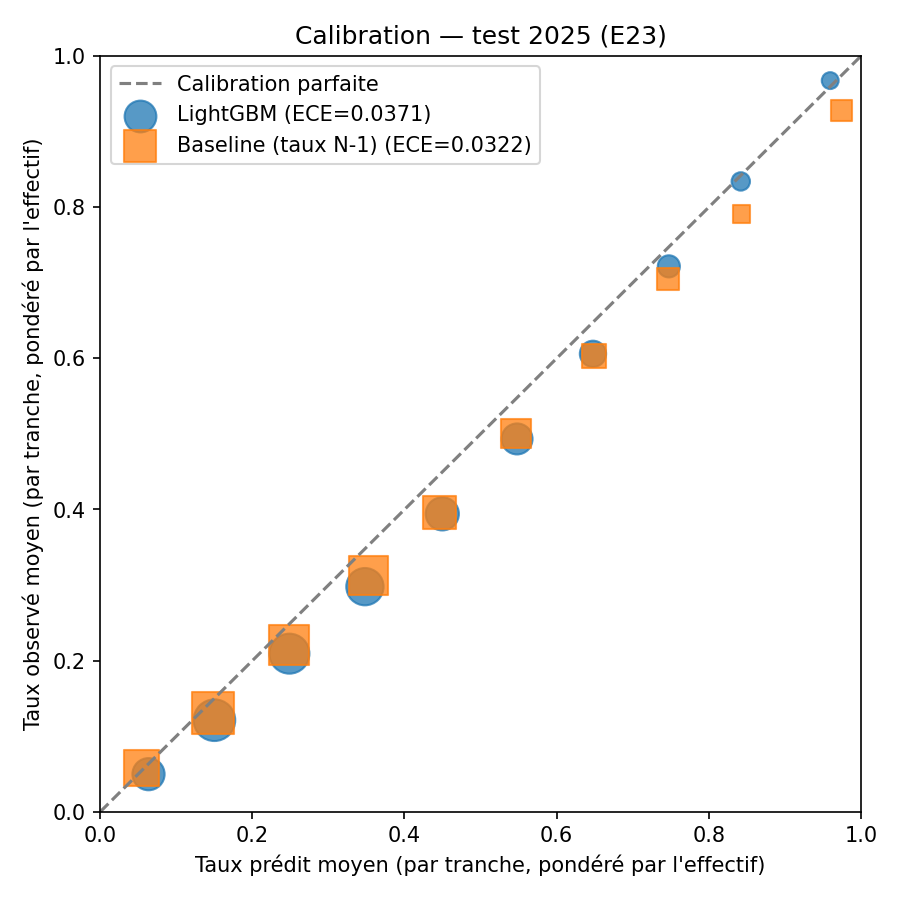
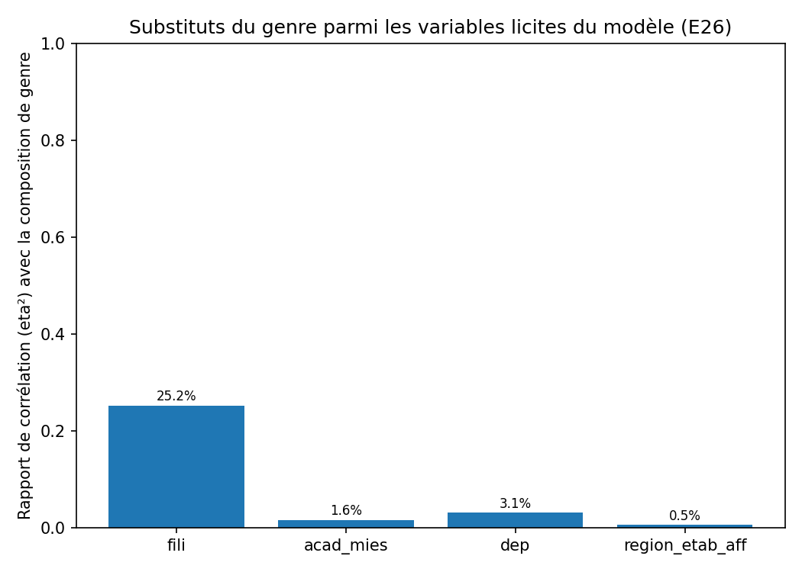
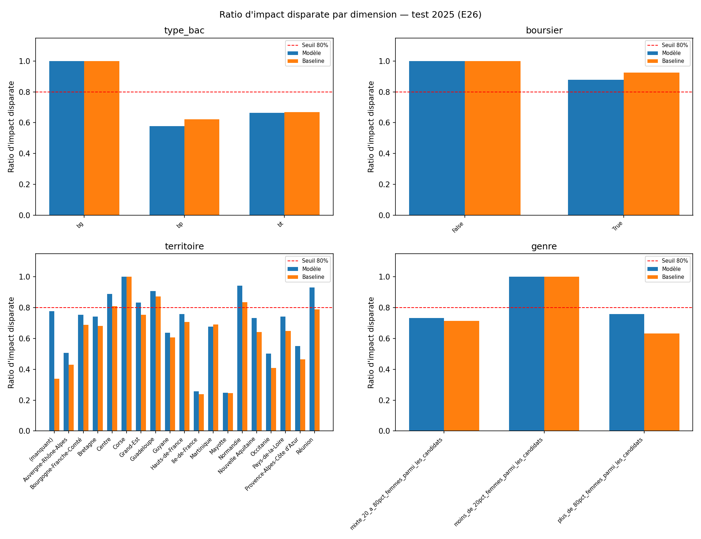
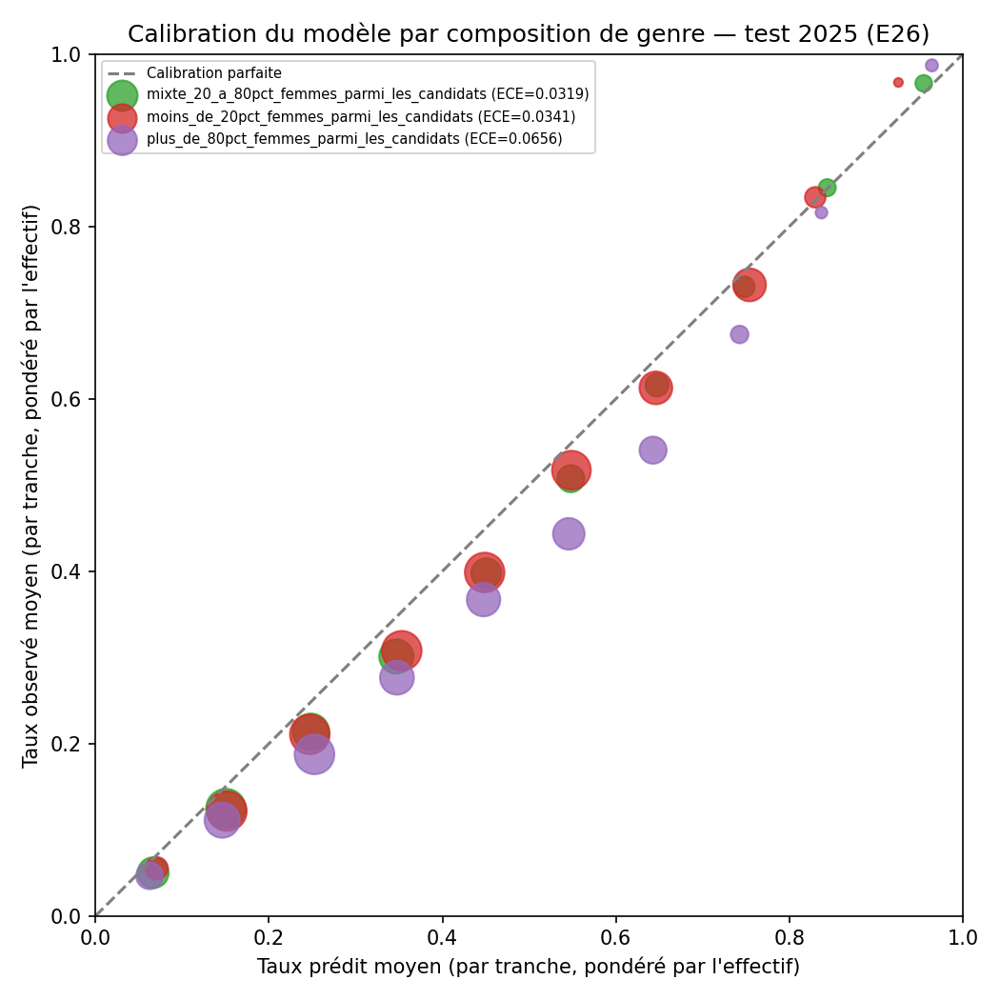

Gouvernance · Bloc 1, critères 1.5 et 1.7
Matrice des risques et analyse d'impact
Onze risques cartographiés, mesurés quand c'est possible, puis rattachés à un fichier ou à une procédure. L'analyse d'impact (AIPD) qui suit en tire un avis scindé : défavorable à la restitution de l'estimation apprise à de vrais candidats, favorable au reste du dispositif sous réserves.
Matrice : mise à jour le 15 septembre 2026. Je la revois à chaque campagne Parcoursup, et à tout changement de source, de variable ou de modèle. AIPD : version 1.0 du 15 septembre 2026, fondée sur l'article 35 du RGPD, qui remplace la version 0.9 du 30 août 2026.
Méthode et échelles
Je reprends la structure du cadre NIST AI RMF : gouverner, cartographier, mesurer, gérer. Chaque risque est cartographié (d'où il vient) et mesuré quand c'est possible (un chiffre, pas une appréciation). Il est ensuite géré par une mesure qui pointe vers un fichier ou une procédure existante. Un risque dont la mesure de réduction ne se traduit ni en code, ni en champ, ni en procédure datée n'est pas traité : il est seulement décrit.
Échelles. Gravité (G) et vraisemblance (V) vont de 1 (négligeable) à 4 (maximale). J'apprécie la gravité pour les personnes concernées, sauf pour les trois risques marqués « Organisation ».
Tableau de synthèse
| # | Risque | Nature | G | V | Niveau | Réduit à | Statut |
|---|---|---|---|---|---|---|---|
| R1 | Violation de données personnelles | Personnes | 3 | 3 | Élevé | Faible | Aggravé le 15/09/2026 ; au 17/09/2026, écran et /matching ouverts, décision authentifiée sur un compte partagé |
| R2 | Ré-identification par l'agrégat territorial | Personnes | 2 | 4 | Élevé | Faible | Traité : k = 5 et filtre de diffusion appliqués au point de restitution |
| R3 | Discrimination indirecte par variable substitut | Personnes | 4 | 3 | Élevé | Élevé | Mesuré sur les prédictions : impact disparate 0,76, sous le seuil légal. Non résolu |
| R4 | Boucle de rétroaction sur l'orientation | Personnes | 4 | 2 | Élevé | Modéré | Partiellement instrumenté, non mesuré |
| R5 | Estimation mal calibrée conduisant au renoncement | Personnes | 4 | 4 | Élevé | Élevé | Mesuré, défavorable : sur-confiance de six points en test |
| R6 | Contrôle humain de façade (biais d'automatisation) | Personnes | 3 | 3 | Élevé | Modéré | Dispositif construit, effectivité non démontrable |
| R7 | Information erronée sur les débouchés | Personnes | 3 | 4 | Élevé | Faible | Tranché : couverture 1,4 %, terme déclaré indisponible ailleurs |
| R8 | Obsolescence du modèle et des référentiels | Personnes | 3 | 4 | Élevé | Modéré | Surveillance construite (ADR 0018) ; le seuil n'aurait pas vu la dégradation mesurée |
| R9 | Non-conformité de réutilisation (licences) | Organisation | 2 | 2 | Modéré | Faible | Tranché dans le registre des sources |
| R10 | Fuite de données dans le protocole d'évaluation | Organisation | 4 | 1 | Modéré | Faible | Traité et testé |
| R11 | Secret versionné dans le dépôt | Organisation | 4 | 1 | Modéré | Faible | Traité et vérifié |
Carte gravité × vraisemblance
La même information, placée sur la grille. Elle montre le niveau initial, avant réduction, avec la vraisemblance de R1 déjà relevée à 3.
| Gravité ↓ · Vraisemblance → | V1 | V2 | V3 | V4 |
|---|---|---|---|---|
| G4 | R10, R11 | R4 | R3 | R5 |
| G3 | — | — | R1, R6 | R7, R8 |
| G2 | — | R9 | — | R2 |
| G1 | — | — | — | — |
Détail des risques
R1 · Violation de données personnelles
Il y a trois surfaces : les échantillons versionnés dans un dépôt public (T2), les journaux d'inférence (T5) et l'infrastructure d'hébergement. L'entraînement ne touche aucune donnée personnelle. L'inférence ne conserve rien de la saisie. Il n'existe donc aucune base de dossiers de candidats, ce qui retire déjà l'essentiel du risque classique de ce type de système. C'est une propriété d'architecture, pas une mesure de sécurité.
Les 239 lignes d'entrepreneur individuel diffusibles de data/samples/ sont publiques par construction. Le risque résiduel n'est pas la divulgation. C'est l'impossibilité pratique de répondre à une opposition sans réécrire l'historique du dépôt (T2, T8 ; voir le registre des traitements).
Une quatrième surface est apparue avec l'écran conseiller, qui expose les caractéristiques d'un candidat sans authentification. Depuis, l'enregistrement d'une décision exige une authentification HTTP Basic. Mais l'écran et /matching restent ouverts, et le compte conseiller est partagé. La vraisemblance passe de 1 à 3 et le risque de modéré à élevé, car une surface d'accès existe désormais sans contrôle. C'est le motif de blocage A de l'analyse d'impact.
Mesures.
- Minimisation vérifiée par
tests/data/test_echantillons_conformite.py. - Comptes conseillers individuels et restriction d'accès à l'écran : à construire, bloquant.
- Cloisonnement écrit dans le code d'infrastructure du second dépôt, mais non déployé.
- Chiffrement en transit : à démontrer une fois l'infrastructure déployée.
- Procédure de notification de violation (72 heures, art. 33) : à écrire.
R2 · Ré-identification par l'agrégat territorial
L'agrégat commune × NAF compte les établissements employeurs par couple (commune, secteur). Une cellule à effectif 1 désigne un établissement précis. Si c'est un entrepreneur individuel, elle désigne une personne. Sirene est pseudonymisée, pas anonymisée (T2, T3).
Mesure sur l'agrégat réel (1 929 179 lignes) :
| Grain | Cellules non vides | Sous k = 5 | Établissements perdus si k = 5 |
|---|---|---|---|
| commune × NAF (5 car.), grain actuel | 886 688 | 90,6 % | 46,9 % |
| commune × division NAF (2 car.) | 430 719 | 81,6 % | 22,9 % |
| département × NAF (5 car.) | 52 493 | 35,0 % | 1,6 % |
| département × division NAF (2 car.) | 7 725 | 9,0 % | 0,1 % |
Appliquer un seuil de k-anonymat au grain actuel ne protège pas : il détruit. 90,6 % des cellules et près de la moitié des établissements réels disparaîtraient. Au grain département × NAF, le même seuil ne coûte que 1,6 % des établissements pour 35 % des cellules. C'est ce renversement qui me fait généraliser plutôt que supprimer au grain fin.
Décision. k = 5 au grain de restitution, jamais au grain de calcul. Le grain commune × NAF reste un calcul intermédiaire, jamais exposé. Le grain de restitution est département × NAF (5 car.), avec suppression (et non lissage) des cellules à moins de 5 établissements actifs employeurs. Si la cellule est supprimée, le terme est recalculé à département × division NAF (91,0 % des cellules passent le seuil) ; sinon, il est déclaré indisponible plutôt qu'estimé.
Le filtre diffusible: true était déclaré dans configs/base.yaml mais pas appliqué jusque-là. Il laissait entrer 20 501 établissements (0,84 %) exclus de la diffusion par l'INSEE. Lire statutDiffusionEtablissement en dixième colonne corrige le point, à faible coût.
Alternatives écartées.
- Le bruit différentiel : sur des comptages dont la médiane est de 1 à 2 établissements par cellule, le bruit nécessaire détruirait le signal qu'il protège. Il serait pertinent sur des comptages plus gros.
- La l-diversité et la t-proximité : elles protègent un attribut sensible associé à une classe d'équivalence. Ici, il n'y a qu'un comptage.
- Ne rien faire au motif que Sirene est publique : l'agrégat crée une information nouvelle (« ce secteur ne compte qu'un employeur dans cette commune »).
Ce qui me ferait changer d'avis. Un besoin produit légitime de restitution communale imposerait de passer au bassin d'emploi plutôt qu'au département, et de remesurer le même tableau avant de trancher.
src/edumatch/matching/agregat_sirene_debouches.py applique k = 5 et le filtre diffusible (20 488 établissements exclus sur 2 423 308 rattachés à une commune). Le module ne renvoie jamais l'effectif sous le seuil. Sirene reste pseudonymisée : k = 5 réduit le risque, il ne sort pas la donnée du champ du RGPD.
R3 · Discrimination indirecte par variable substitut
Le genre n'entre jamais dans le modèle, et cet invariant est vérifié par test. Mais une variable neutre en apparence peut reconstituer l'attribut protégé.
Mesure. J'ai calculé l'information mutuelle entre les variables candidates et le sexe des admis, corrigée par permutation (5 tirages, graine 42) :
| Variable | Part du genre reconstituée |
|---|---|
cod_uai | 28,9 % |
fili | 19,5 % |
ville_etab | 10,2 % |
select_form | 5,6 % |
dep | 2,3 % |
acad_mies | 1,4 % |
Mon hypothèse de départ désignait l'académie comme substitut principal : elle arrive dernière. Le deuxième substitut, fili, est une variable indispensable. On ne peut pas la retirer sans détruire l'objet du système.
Le paradoxe assumé. Mesurer l'équité exige l'attribut protégé ; la minimisation pousse à ne pas le collecter. Ma résolution : le genre reste dans les données publiques d'audit. Il n'est jamais collecté auprès du candidat, jamais en entrée du modèle, et accessible seulement pour l'audit (colonnes classées interdite dans configs/base.yaml).
Dispositif à trois niveaux (ADR 0011) : exclusion à l'entrée (testée), mesure des substituts, audit a posteriori sur les prédictions avec ratio d'impact disparate. cod_uai et ville_etab sont exclus. fili est conservée : c'est une position assumée, dont le seuil de réouverture est écrit.
Le niveau 3 a parlé le 30 août 2026. Sur le test 2025, les substituts totalisent 14,2 % de l'explication SHAP, alors que le genre n'entre jamais en entrée. Le ratio d'impact disparate du groupe le plus féminisé vaut 0,76, sous le seuil des quatre cinquièmes. Son erreur de calibration est le double de celle des autres groupes (0,0656 contre 0,0319 et 0,0341), au-dessus de la règle de référence (0,0475). Retirer les quatre substituts coûte +0,0006 de MAE pondérée et dégrade le ratio (0,66 → 0,62) : l'information est diffuse dans les variables décalées, pas concentrée dans quatre colonnes.
Les trois mesures déjà prises — exclusion à l'entrée, mesure des substituts, audit a posteriori — ne suffisent pas à ramener le ratio sous le seuil. Trois pistes restent à essayer : la repondération à l'apprentissage, la contrainte d'équité dans l'objectif, la recalibration par groupe.
R4 · Boucle de rétroaction sur l'orientation
Un système qui estime faibles les chances d'un profil décourage ce profil de candidater. Moins de vœux de ce profil, c'est un taux d'admission observé qui change l'année suivante. Le modèle réapprend alors sur des données que ses propres recommandations ont façonnées.
La cible est le taux de propositions rapporté aux vœux, et le vœu est justement la variable que le système influence. Un profil découragé disparaît du dénominateur, ce qui déplace le taux mesuré l'année suivante. Les profils les plus exposés sont ceux dont les taux sont déjà les plus bas : le bac professionnel, où 21,6 % des formations n'émettent aucune proposition.
Mesures.
- Suivre, d'une session à l'autre, la distribution des profils recommandés, et pas seulement la performance du modèle.
- Conserver la capacité de comparer les taux avant et après mise en service (permise par les paliers de T5).
- Ne jamais présenter une estimation basse comme une interdiction.
models/derive.py (ADR 0018) suit la distribution des prédictions d'une session à l'autre : PSI 0,0174 en validation 2024, 0,0296 en test 2025, contre un seuil de 0,20. Sa référence reste la distribution d'entraînement 2020-2023, pas une population post-déploiement, qui n'existe pas. Ce risque reste donc identifié, instrumenté et non mesuré. Réduction structurelle à noter : le système n'apprend pas en continu. L'entraînement est une tâche de lot sur un millésime publié, et la boucle ne peut pas se refermer en quelques heures.
R5 · Estimation mal calibrée conduisant au renoncement
Le système annonce une probabilité à un adolescent. Une estimation à 20 % qui vaut en réalité 45 % peut coûter une candidature, donc un parcours. La gravité est maximale pour la personne.
Mesuré au 15 septembre 2026, à couverture égale sur les 77 159 cellules du test 2025 :
| Modèle | Règle de référence | |
|---|---|---|
| MAE pondérée, validation 2024 | 0,0690 | 0,0727 |
| MAE pondérée, test 2025 | 0,0758 | 0,0701 |
| ECE, validation 2024 | 0,0030 | 0,0141 |
| ECE, test 2025 | 0,0371 | 0,0322 |
En validation, le modèle est bien calibré. En test, il devient sur-confiant sur la plage médiane : il annonce 0,55 quand la réalité observée est 0,49. Il reste bien calibré aux extrêmes.
La vraisemblance passe de 3 à 4. Le défaut, jusque-là seulement estimé, est désormais constaté sur la plage où un candidat hésite. Le candidat à qui l'on annonce 0,55 pour 0,49 candidate sur une formation moins accessible qu'annoncé et s'expose à un refus non anticipé.
Mesures en place. Une mise en garde est portée par chaque réponse de l'API (MISE_EN_GARDE_ACCESSIBILITE) et affichée à l'écran. Les facteurs explicatifs sont présentés à côté du score. La formulation porte sur une catégorie, pas sur une personne. Reste à ajouter un intervalle plutôt qu'un point.
Aucune restitution chiffrée à un candidat réel tant que le modèle ne passe pas sous 0,0701 de MAE pondérée et 0,0322 d'ECE sur une session de test non consultée pendant le réglage.
R6 · Contrôle humain de façade
L'article 14 exige un dispositif permettant de comprendre, superviser et écarter. Un écran qui affiche un score sans permettre de le contredire, ou dont le bouton d'écartement n'est jamais utilisé, satisfait la lettre et manque l'objet : c'est le biais d'automatisation.
| Exigence | État au 15 septembre 2026 |
|---|---|
| Écartement motivé, champ obligatoire | Fait bloqué côté client et serveur |
| Horodaté et journalisé | Fait api/feedback_store.py |
| Facteurs explicatifs présentés à côté du score | Fait |
| Taux d'écartement mesuré et affiché au déployeur | Partiel décisions comptées dans Grafana, aucun taux ; un taux nul sur une campagne serait un signal d'alerte, pas un signe de qualité |
| Identité du superviseur vérifiée | Partiel authentification sur un compte partagé, non nominative |
Risque résiduel. Le dispositif existe et il est bien conçu. Son effectivité n'est pas démontrable.
R7 · Information erronée ou absente sur les débouchés
La chaîne de nomenclatures atteint 61,42 % de couverture d'IDÉO vers NAF (3 605 formations sur 5 869). Mais aucune formation Parcoursup n'y est raccordée : aucun millésime ne porte de code RNCP, NSF ou ROME. Le terme « débouchés » ne peut donc être calculé pour aucune formation effectivement recommandée. De plus, la correspondance ROME/NAF s'arrête à la division (2 chiffres), quand l'agrégat Sirene porte la sous-classe (5 caractères).
Un appariement textuel de libellés non mesuré produirait des débouchés faux, présentés avec la même assurance que des débouchés justes, et qu'un lycéen ne peut pas distinguer. Deux issues sont acceptables : un appariement mesuré avec son taux d'erreur, ou un périmètre restreint et déclaré, où le terme n'est calculé que pour les formations réellement raccordées.
J'ai pris la seconde issue. L'appariement textuel exact des libellés couvre 7 libellés distincts sur 712 (1,0 %), soit 6 017 lignes sur 440 030 (1,4 %). J'ai relu les sept correspondances à la main. Pour les 98,6 % restants, le terme est marqué indisponible avec son motif, jamais mis à zéro en silence. Ce motif remonte jusqu'à l'écran du conseiller.
Pas parce que la couverture est bonne : elle est mauvaise. Mais aucune personne n'est exposée à un chiffre faux. À dire au déployeur : le troisième terme du score est sans valeur pour la quasi-totalité du catalogue. C'est une limite du produit.
R8 · Obsolescence du modèle et des référentiels
| Source d'obsolescence | Fait mesuré | Échéance |
|---|---|---|
| Cible non stationnaire | Taux agrégé de 40,5 % à 36,7 % entre 2020 et 2025, pendant que la moyenne des taux par formation monte de 0,491 à 0,522 | Chaque session |
| Rupture de série boursiers | Part de vœux boursiers de 16,3 % à 13,8 % en 2025 : les cellules _brs du test ne décrivent pas la même population que celles de l'entraînement | Déjà réalisée |
| Bascule NAF 2025 | Le répertoire Sirene bascule de nomenclature, et la clé de l'agrégat en dépend ; couverture NAF 2025 déjà à 100,0 % | Début 2027 |
| Schéma Parcoursup | 85 colonnes en 2018, 118 en 2025 ; le contrôle bloque la chaîne tant qu'une colonne nouvelle n'est pas classée | Chaque session |
Un dispositif qui suivrait le seul taux agrégé conclurait que les formations deviennent plus sélectives. Or la moyenne par formation, la grandeur réellement apprise, évolue en sens inverse. Surveiller la mauvaise grandeur est pire que ne rien surveiller.
Mesures.
- Réentraînement annuel calé sur la publication du millésime (DAG
edumatch_parcoursup). - Seuil de dérive arrêté (ADR 0018) : PSI 0,20 appliqué à la médiane des 46 variables, jamais au maximum. Sinon, il se déclencherait en permanence à cause de deux variables dont la dérive n'est qu'un changement de libellé :
region_etab_aff(0,75) etselect_form(0,35). - Contrôle de fraîcheur par source ; le seuil reste à écrire pour IDÉO.
Au seuil retenu, le dispositif n'aurait pas détecté la dégradation validation → test mesurée par ailleurs : dérive de la cible 0,0115, des prédictions 0,0174 puis 0,0296, un ordre de grandeur sous 0,20. C'est cohérent avec la nature du phénomène. Une dérive du concept, où la relation entre variables et cible se déforme sans que les distributions marginales bougent, est invisible au PSI. Le PSI est un signal précoce, pas un substitut à la mesure de performance réelle.
R9 · Non-conformité de réutilisation (organisation)
J'ai tranché dans le registre des sources : ODbL sur toute base dérivée redistribuée ou publiquement exploitée ; attribution avec date pour les cinq jeux sous Licence Ouverte. Aucune source non commerciale n'est utilisée. Deux points restent ouverts : l'écran d'attribution n'existe pas, et la publication ODbL de la table dérivée est décidée mais pas faite.
R10 · Fuite de données dans le protocole (organisation)
Traité et prouvé. Le critère de tri se fonde sur ce qu'un lycéen connaît au moment où il formule ses vœux. Il est plus large que « postérieur à la décision » : voe_tot précède l'admission et reste une fuite. J'ai retenu une liste blanche de 9 colonnes sur la session prédite, 35 variables décalées d'une session et 73 exclusions motivées. Les quatre contrôles de tests/data/test_variables_reference.py sont vérifiés par mutation. Risque résiduel : le contrôle porte sur des noms de colonnes, pas sur leur sémantique.
R11 · Secret versionné (organisation)
Traité et vérifié. Le .gitignore exclut .env, credentials*.json, *adminsdk*.json, *.pem, *.key et kubeconfig. Le fichier .env.example liste toutes les variables avec des valeurs factices. Aucune chaîne ressemblant à un secret ne figure dans src/ ni dans configs/. La politique de rotation et de révocation est écrite dans le plan de gouvernance.
Ce que la matrice ne couvre pas
- La procédure de notification de violation (art. 33 et 34) est écrite ; elle n'a pas encore été exercée, faute d'incident, et suppose de savoir qui héberge quoi.
- Aucun journal d'incident, alors que l'article 9 du règlement sur l'IA suppose un processus de gestion des risques continu.
- Aucun plan de surveillance après commercialisation (art. 72) : la mesure de dérive en est l'instrument, pas le plan.
- L'ouverture de l'écran conseiller et le compte partagé relèvent de la sécurité technique. Ils sont portés ici par R1 et par le motif de blocage A de l'AIPD.
Ce qui a changé au 15 septembre 2026
| Risque | Avant | Après |
|---|---|---|
| R2 k-anonymat | Décidé, non implémenté | Implémenté et vérifié au point de restitution |
| R5 calibration | Métrique définie, non mesurée | Mesurée, défavorable, vraisemblance relevée de 3 à 4 |
| R6 contrôle humain | Spécifié, non construit | Construit, effectivité non démontrable |
| R3 discrimination indirecte | Mesuré sur les entrées | Mesuré sur les prédictions, résiduel relevé de modéré à élevé |
| R7 débouchés | Décision à prendre | Tranché, couverture 1,4 %, indisponibilité déclarée |
| R8 obsolescence | Surveillance à construire | Construite, avec son aveu de portée |
| R1 violation | Vraisemblance 1 | Vraisemblance 3, surface d'accès non authentifiée apparue |
Trois risques restent décidés et non traités : R3 (aucun levier disponible ne ramène l'impact disparate sous le seuil), R4 (non mesurable sans millésime post-déploiement), et la restriction d'accès portée par R1.
AIPD · Cadre de l'analyse
Depuis la version 0.9, qui laissait quatre points en attente, j'ai produit les quatre mesures qui manquaient : l'audit d'équité sur les prédictions, la calibration, l'écran de supervision et la journalisation. Cette version 1.0 les intègre et rend un avis tranché.
Cette analyse porte sur les risques pour les droits et libertés des candidats. Les risques pour le projet lui-même (licence non conforme, fuite de données dans le protocole, secret versionné) sont dans la matrice ci-dessus, marqués « Organisation ».
1. Pourquoi cette analyse est obligatoire
| Critère | Réalisé ? | Fait |
|---|---|---|
| Évaluation ou notation, y compris profilage | Oui | Estimation chiffrée des chances d'admission, formation par formation |
| Données de personnes vulnérables | Oui | Lycéens de terminale, mineurs pour une part |
| Usage innovant ou nouvelles technologies | Oui | Modèle appris, explication par valeurs de Shapley |
| Traitement faisant obstacle à un droit ou à un service | Partiellement | N'interdit rien, mais une estimation basse peut conduire à renoncer de soi-même à une candidature |
Deux critères auraient suffi à déclencher l'obligation. Quatre sont réunis.
2. Description du traitement
Finalité. Aider un lycéen de terminale à construire une liste de vœux informée : à quel point une formation correspond à ses intérêts (affinité, par règles), ses chances d'y être admis (accessibilité, seul terme appris), et les débouchés d'emploi sur son territoire (débouchés, par agrégats). Le score est multiplicatif : si un terme s'annule, la recommandation disparaît (src/edumatch/matching/score.py, testé).
| Le système fait | Le système ne fait pas |
|---|---|
| Estimer un taux d'admission par cellule (formation, session, type de bac, boursier) | Estimer une probabilité individuelle : le modèle n'a jamais vu de dossier de candidat |
| Restituer les facteurs de l'estimation (TreeSHAP) | Prendre une décision d'admission, qui appartient aux établissements |
| Ordonner des formations selon un score composite | Empêcher une candidature, ou la transmettre à quiconque |
Le modèle apprend sur des agrégats publics de campagnes passées, pas sur des personnes. Il prédit la propriété d'une cellule, affectée ensuite à la personne qui en relève. Le candidat reçoit « le taux estimé de sa catégorie », pas « sa probabilité », et l'interface doit le dire ainsi.
Flux de données.
flowchart TD T1["ENTRAÎNEMENT · T1
Parcoursup 2020-2025, comptages agrégés par formation
440 030 cellules, 46 variables → LightGBM pondéré
aucune donnée personnelle"] T4["INFÉRENCE · T4
Saisie : type de bac, boursier ou non, territoire, intérêts déclarés
→ score par formation + facteurs explicatifs
données personnelles, mineurs possibles, saisie non conservée"] T5["TRAÇABILITÉ · T5
Journal d'inférence
12 / 36 mois, purge exécutable et planifiée"] T6["SUPERVISION · T6
Conseiller : voir, comprendre, écarter
motif obligatoire, bloqué client et serveur"] T1 --> T4 T4 --> T5 T4 --> T6
Aucune donnée de navigation, aucun historique de consultation, aucun profil alimenté par l'usage : ni à l'entraînement, ni à l'inférence.
Données traitées à l'inférence.
| Collectée | Non collectée, par décision |
|---|---|
| Type de baccalauréat | Nom, prénom, adresse, date de naissance exacte |
| Statut de boursier | Établissement d'origine (cod_uai, exclu, ADR 0013) |
| Département ou académie | Genre |
| Intérêts déclarés | Origine, convictions, santé, handicap, résultats scolaires nominatifs |
L'article 9 couvre l'origine ethnique, les opinions politiques, les convictions, l'appartenance syndicale, les données génétiques et biométriques, la santé, la vie et l'orientation sexuelles. Le statut de boursier n'en fait pas partie. C'est une donnée à forte portée sociale, qui appelle une vigilance sur la discrimination indirecte. Le taux d'admission d'un boursier et d'un non-boursier dans la même formation diffère : masquer cette différence donnerait à un boursier une estimation calculée sur une population qui n'est pas la sienne.
Périmètre, destinataires, durées. Le détail est dans le registre des traitements. Personnes concernées : les lycéens de terminale du territoire du déployeur. Destinataires : le candidat et le conseiller. Hébergement souverain, aucun transfert hors Union. Durées : 12 mois en clair, 36 mois pseudonymisés, puis agrégats. La purge est exécutable (api/audit_purge.py) et planifiée (DAG edumatch_audit_purge).
3. Nécessité et proportionnalité
| Exigence | Appréciation | Preuve |
|---|---|---|
| Finalité déterminée, explicite, légitime | Satisfaite | Aide à l'orientation ; aucune finalité secondaire, aucun profilage publicitaire, aucune revente |
| Base légale | Satisfaite | Consentement (art. 6.1.a) en usage direct ; mission d'intérêt public (art. 6.1.e) pour un déployeur public ; intérêt légitime (art. 6.1.f) pour les échantillons Sirene (ADR 0008) |
| Minimisation | Satisfaite et testée | 4 caractéristiques collectées ; 9 colonnes sur 128 lues sur la session prédite, 9 sur 54 pour Sirene ; genre exclu et contrôlé par mutation |
| Exactitude | Mesurée, défavorable au modèle appris | §3.1, le point qui commande l'avis |
| Limitation de conservation | Décidée, exécutée, planifiée | audit_purge.py, testée, idempotente. Exception : T6 sans purge |
| Information | Non satisfaite | Aucune notice destinée au candidat ; l'écran construit s'adresse au conseiller |
| Droits des personnes | Non satisfaits | Aucun dispositif d'exercice (T8) ; délai d'un mois décrit, non outillé |
| Sous-traitance | Non conclu | Contrat art. 28 obligatoire avant la mise en service de l'assistant (T7) |
3.1 Le test de nécessité, refait avec les mesures
Le terme d'accessibilité existe en deux versions comparables. Elles suivent le même protocole temporel (entraînement 2020-2023, validation 2024, test 2025, ADR 0012) et sont comparées à couverture égale (100 % des 77 159 cellules de test).
| Modèle appris | Règle de référence | |
|---|---|---|
| MAE pondérée, validation 2024 | 0,0690 | 0,0727 |
| MAE pondérée, test 2025 | 0,0758 | 0,0701 |
| ECE, validation 2024 | 0,0030 | 0,0141 |
| ECE, test 2025 | 0,0371 | 0,0322 |

Ventilé par sous-population sur le test 2025, le modèle appris est battu par la règle de référence dans les trois types de bac, dans les deux statuts de boursier, dans deux des trois groupes de mixité, et dans 16 des 19 territoires mesurés. Le tableau complet est dans la Model Card.
La nécessité, au sens de l'article 35 §7.b, ne porte pas sur l'utilité générale du service. Elle porte sur l'existence d'un moyen moins intrusif atteignant aussi bien la finalité. Ici, un moyen moins intrusif existe. Il est déjà construit (models/baseline.py), n'apprend rien, est intégralement explicable, et fait mieux que le modèle appris sur la session la plus récente, en précision comme en calibration.
Un modèle appris qui n'apporte rien de mesurable ajoute de l'opacité, une surface de dérive, une charge de journalisation et un risque de discrimination indirecte, pour un résultat inférieur. Le test de proportionnalité ne tranche pas en sa faveur. Il ne tranche pas contre le service : l'affinité, la restitution des facteurs, l'écran de supervision, la journalisation et l'ordonnancement restent proportionnés. C'est le seul terme appris qui ne passe pas ce test.
4. Ce que l'architecture retire du risque avant toute mesure
Trois propriétés structurelles ne peuvent pas être désactivées par erreur :
- Aucune donnée personnelle à l'entraînement : il n'existe pas de base de dossiers à exfiltrer ou à réidentifier.
- Aucune conservation de la saisie : ce qui sert à produire la réponse disparaît. Seul le journal est conservé, à part, avec ses propres durées.
- Le genre n'est jamais collecté ni utilisé en entrée : il existe seulement dans les données publiques agrégées, pour l'audit (
models/fairness.py).
5. Risques pour les droits et libertés des personnes
| Risque | Impact potentiel | Vraisemblance | Mesures | Résiduel |
|---|---|---|---|---|
| Accès illégitime aux données | Divulgation du statut de boursier et du projet d'orientation d'un mineur | Relevée depuis la v0.9 : l'écran conseiller et /matching sont ouverts ; l'enregistrement d'une décision est authentifié, mais sur un compte partagé | Cloisonnement écrit dans le code d'infrastructure du second dépôt (réseau privé, registre et stockage privés, NetworkPolicy), à déployer ; chiffrement en transit à démontrer au déploiement ; purge du journal exécutée et planifiée | Élevé tant que l'accès aux données de candidats n'est ni restreint ni imputable (motif A) |
| Modification non désirée | Caractéristique altérée, estimation fausse, conseil faux | Faible | Écriture atomique, empreintes SHA-256, contrôles qualité bloquants, idempotence testée | Faible |
| Disparition de données | Impossibilité de retracer une recommandation contestée | Faible désormais | Journal d'inférence horodaté, version de modèle et empreinte de commit | Faible pour T5 ; T6 ne se corrèle pas au journal d'inférence, faute d'identifiant commun |
AIPD · Risques propres au système apprenant
C'était le point le plus délicat : il concentrait les quatre lacunes de la version 0.9. Des mesures les ont comblées.
6.1 Discrimination indirecte par variable substitut, mesurée
Le risque : recevoir une estimation systématiquement différente en raison d'un attribut protégé jamais collecté, sans moyen de s'en apercevoir.
Sur les entrées, j'ai mesuré l'information mutuelle corrigée par permutation. La filière reconstitue 19,5 % du genre, l'établissement d'origine 28,9 % (exclu), l'académie 1,4 %. La filière est indispensable au modèle : exclure le genre est nécessaire, mais ce n'est pas la seule mesure requise.

Sur les sorties (models/fairness.py, test 2025), la définition privilégiée est la calibration par groupe. Le seuil de décision vaut 0,50 et le taux de sélection est pondéré par l'effectif.
| Dimension | Groupe le plus défavorisé | Ratio, modèle | Ratio, référence | Seuil |
|---|---|---|---|---|
| Genre | Plus de 80 % de candidates femmes | 0,76 | 0,63 | 0,80 |
| Type de bac | Professionnel | 0,58 | 0,62 | 0,80 |
| Territoire | Mayotte, Île-de-France | 0,25 | 0,25 | 0,80 |
| Boursier | Boursier | 0,88 | 0,92 | 0,80 |

Et sur la calibration par groupe :
| Groupe de mixité | ECE modèle | ECE référence |
|---|---|---|
| Plus de 80 % de candidates femmes | 0,0656 | 0,0475 |
| Mixte (20-80 %) | 0,0319 | 0,0288 |
| Moins de 20 % de candidates femmes | 0,0341 | 0,0416 |

Il faut rapporter ensemble trois lectures.
- Sur le genre, le modèle sur-annonce les chances d'admission dans les formations très féminisées. Son erreur de calibration y est le double de celle des autres groupes, et supérieure à la règle de référence. Sur ma propre définition d'équité, la règle de référence est plus équitable que le modèle appris.
- Le ratio de 0,76 est sous le seuil des quatre cinquièmes, mais le modèle y fait mieux que la référence (0,63). Je n'ai pas choisi la définition d'équité selon le résultat : j'ai retenu la calibration par groupe avant de connaître les chiffres (voir la page Modèle). Je savais que le théorème d'impossibilité interdit de satisfaire calibration et parité en même temps si les taux de base diffèrent entre groupes. Sous une parité démographique, le verdict s'inverserait : je le note plutôt que de le taire.
- Les écarts par type de bac et par territoire sont réels, mais ce ne sont pas des artefacts du modèle. La règle de référence, qui n'apprend rien, reste sous les mêmes seuils (professionnel 0,62, Mayotte 0,25). Ils décrivent la structure du système d'orientation français. Exception : sur le bac professionnel, le modèle dégrade légèrement le ratio (0,58 contre 0,62).
Retirer les quatre substituts encore présents (fili, select_form, dep, acad_mies, soit 14,2 % de l'explication SHAP) ne coûte presque rien en performance (+0,0006 de MAE pondérée). Mais cela n'améliore pas l'équité : le ratio du groupe le plus féminisé passe de 0,66 à 0,62. L'information est diffuse dans les variables décalées, pas concentrée dans quatre colonnes. L'exclusion de variables ne peut pas être le seul levier d'équité.
6.2 Renoncement induit par une estimation basse : la calibration se dégrade
C'est le risque le plus grave. Un adolescent à qui l'on annonce 20 % de chances renonce à candidater. Si l'estimation est fausse, le système a fermé une porte qu'aucune décision humaine n'avait fermée. L'effet est invisible, car personne ne mesure les candidatures qui n'ont pas eu lieu.
La mesure existe (models/evaluate.py, 10 tranches). En validation 2024, le modèle est bien calibré : ECE 0,0030. En test 2025, l'ECE monte à 0,0371, au-dessus de la règle de référence (0,0322). Le modèle devient sur-confiant sur toute la plage médiane : il annonce 0,55 quand la réalité observée est 0,49. Il reste bien calibré aux extrêmes.
Six points de sur-annonce au milieu de l'échelle : c'est l'erreur qui compte pour ce risque, car le candidat qui hésite lit un chiffre médian. Lui annoncer 0,55 pour 0,49 le fait candidater sur une formation moins accessible qu'annoncé, et l'expose à un refus non anticipé. Sur-confiance et renoncement sont les deux faces du même défaut : la première est mesurée, la seconde n'est pas observable.
La réserve de la version 0.9 est confirmée par la mesure, et elle change de motif. Je ne m'oppose plus à une restitution dont on ignore la qualité, mais à une restitution dont on connaît le défaut.
Mesures en place. L'interface énonce que l'estimation porte sur une catégorie et non sur la personne. Les facteurs explicatifs sont présentés à côté du score. La mise en garde voyage avec chaque réponse de l'API (MISE_EN_GARDE_ACCESSIBILITE). Reste à ajouter un intervalle plutôt qu'un point.
6.3 Boucle de rétroaction, partiellement instrumentée
Le risque : appartenir à un profil découragé, le voir se raréfier dans les campagnes suivantes, pendant que le modèle confirme son propre biais. Profil exposé : le bac professionnel, où 21,6 % des formations n'émettent aucune proposition. Ce n'est pas théorique : la cible est un taux dont le dénominateur est le nombre de vœux, c'est-à-dire la grandeur que le système influence.
models/derive.py (ADR 0018) mesure la dérive des variables, de la cible et des prédictions : PSI 0,0174 en validation 2024, 0,0296 en test 2025, contre un seuil de 0,20. C'est l'instrument qui verrait une boucle s'installer. Mais sa référence est la distribution d'entraînement 2020-2023, pas une population post-déploiement, qui n'existe pas. Ce risque reste donc identifié, partiellement instrumenté et non mesuré.
Le seuil (PSI médian 0,20) est vingt fois au-dessus du pire cas observé. Il est calibré contre le bruit d'une session, pas contre une dérive lente de composition. L'ADR reconnaît qu'il n'aurait pas détecté la dégradation validation → test déjà mesurée.
6.4 Contrôle humain de façade : dispositif construit, effectivité non mesurable
Le risque : qu'un conseiller suive l'outil parce que l'outil est chiffré.
| Exigence posée en v0.9 | État |
|---|---|
| Écartement possible | Oui |
| Écartement motivé, motif obligatoire | Oui bloqué côté client et serveur |
| Horodaté et journalisé | Oui |
| Facteurs explicatifs présentés à côté du score | Oui |
| L'interface dit ce qu'elle ne sait pas | Oui affiché |
| Taux d'écartement mesuré et restitué | Partiel un panneau Grafana compte les décisions sur 24 heures ; aucun taux n'est calculé |
| Identité du superviseur vérifiée | Partiel authentification HTTP Basic sur l'enregistrement de la décision, compte partagé non nominatif |
Ce sont deux manques différents. L'absence de taux d'écartement empêche de mesurer l'effectivité du contrôle : c'est une réserve. Le compte partagé est plus grave : une trace de supervision n'est imputable à aucune personne identifiée. C'est le motif de blocage A.
6.5 Information erronée sur les débouchés : tranché
Le risque : orienter un choix de vie sur un chiffre de débouchés faux. La mesure est sévère. L'appariement textuel exact des libellés couvre 7 libellés distincts sur 712 (1,0 %), soit 6 017 lignes sur 440 030 (1,4 %), relues à la main. Pour les 98,6 % restants, le terme est marqué indisponible avec son motif, jamais mis à zéro en silence, et ce motif remonte à l'écran.
Je considère ce risque comme traité. Non parce que la couverture est bonne (elle est mauvaise), mais parce que la personne n'est jamais exposée à un chiffre faux. La valeur du troisième terme du score est aujourd'hui nulle pour la quasi-totalité du catalogue. Il faut le dire au déployeur comme une limite du produit.
6.6 Ré-identification d'un tiers par l'agrégat territorial : traité
Ce risque touche une autre catégorie de personnes que les candidats : les entrepreneurs individuels. 65,9 % des cellules non vides de l'agrégat commune × NAF ne comptent qu'un établissement. La décision prise en R2 est implémentée : restitution au grain département × NAF avec k = 5, grain communal jamais exposé, filtre diffusible appliqué (20 488 établissements exclus). Le module ne renvoie jamais l'effectif sous le seuil. Sirene reste pseudonymisée, pas anonymisée : k = 5 réduit le risque, ce n'est pas une anonymisation.
AIPD · Les mineurs : ce que l'article 8 impose et ce qui manque
Le public visé est celui des lycéens de terminale : majoritairement 17-18 ans, avec une minorité de 16 ans. En France, l'âge du consentement numérique est fixé à quinze ans. Le public est au-dessus : le consentement parental n'est pas requis pour ce périmètre.
Il en découle trois conséquences, dont deux non satisfaites :
| Conséquence | État |
|---|---|
| L'information doit être rédigée pour un adolescent et affichée avant la saisie | Non satisfaite le seul écran s'adresse au conseiller |
| Aucun public de moins de quinze ans sans rouvrir cette analyse et recueillir le consentement parental | Écrit, non outillé la date de naissance n'est pas collectée |
| Vigilance sur le champ libre du motif d'écartement, où un conseiller peut consigner une information sur un mineur | Non satisfaite avertissement affiché, purge inexistante |
AIPD · Avis
8.1 État des quatre motifs de la version 0.9
| Motif v0.9 | État au 15 septembre 2026 | Preuve |
|---|---|---|
| 1. Calibration non mesurée | Levé comme motif d'ignorance ; la mesure est défavorable et fonde le motif D | models/evaluate.py |
| 2. Audit d'équité non réalisé | Levé réalisé sur quatre dimensions | models/fairness.py, page Modèle |
| 3. Aucun dispositif de contrôle humain | Levé sur l'existence effectivité non mesurable, supervision authentifiée sur un compte partagé | api/static/, routes/feedback.py |
| 4. Durées sans purge exécutable | Levé pour T5 pas pour T6 | api/audit_purge.py, DAG |
8.2 Sur le principe du traitement : favorable
L'architecture retire du risque là où il est le plus lourd : aucune donnée personnelle à l'entraînement, aucune conservation de la saisie, aucune donnée comportementale. La minimisation est vérifiée par des tests qui échouent si on la contredit, et ces tests sont validés par mutation. Le dispositif d'équité repose sur des mesures qui ont infirmé plusieurs hypothèses initiales du projet.
8.3 Sur la mise en service : un avis scindé
Motif suffisant : il ne passe pas le test de nécessité. Une règle de dénombrement déjà construite fait mieux que lui en précision et en calibration sur la session la plus récente, dans la quasi-totalité des sous-populations. Elle est aussi mieux calibrée par groupe sur la dimension la plus sensible du projet. Le modèle appris ajoute de l'opacité et un risque de discrimination indirecte pour un résultat inférieur. Cela ne se rattrape pas par un avertissement.
Ce qui lèverait ce point, écrit avant la prochaine mesure : un modèle réentraîné qui passe sous 0,0701 de MAE pondérée et 0,0322 d'ECE sur une session de test non consultée pendant le réglage, avec un ECE du groupe le plus féminisé ramené à l'ordre de grandeur des autres groupes (0,032).
Affinité, ordonnancement, restitution des facteurs, écran de supervision, journalisation et purge : ces composants sont proportionnés, utiles et documentés. Les motifs de blocage et les réserves ci-dessous s'y appliquent.
Avec des conseillers, et sans restitution directe à des candidats mineurs. C'est le périmètre du projet de certification.
8.4 Les motifs de blocage encore actifs
Chacun renvoie à la liste opposable du plan de gouvernance et suffit, seul, à bloquer une mise en service auprès de candidats réels.
| # | Motif | Rattachement | Ce qui le lève |
|---|---|---|---|
| A | Écran et /matching ouverts alors qu'ils exposent des données de candidats ; décision authentifiée sur un compte conseiller partagé, donc aucune trace imputable à une personne | Art. 32 RGPD, art. 14 AI Act | Comptes conseillers individuels ; accès à l'écran et à /matching restreint |
| B | Journal de supervision T6 sans purge, alors que la durée est écrite (12 mois), faute d'identifiant commun avec T5 | Art. 5.1.e RGPD | Identifiant de corrélation T5/T6, extension de audit_purge.py |
| C | Aucune notice d'information destinée au candidat | Art. 12, 13, 14 et 8 RGPD | Notice affichée avant la saisie, pour un lecteur de 17 ans |
| D | Restitution chiffrée d'une probabilité dont le défaut de calibration est connu : sur-annonce de six points en test | Art. 5.1.d RGPD, §6.2 | Le double seuil de l'avis (a) |
| E | Attribution des sources non effective, alors que la Licence Ouverte impose paternité et date | Art. 2 Licence Ouverte v2.0 | Écran « Sources et licences » alimenté par les manifestes |
8.5 Réserves fermes, non bloquantes
- Aucun dispositif d'exercice des droits (T8), alors que le délai d'un mois court dès la première demande.
- Procédure de notification de violation (art. 33 et 34) écrite, non encore exercée faute d'incident ; elle suppose de savoir qui héberge quoi.
- Suivi partiel de l'écartement : un panneau Grafana compte les décisions, mais aucun taux n'est calculé ni restitué au déployeur. Un taux nul est un signal d'alerte, pas un succès.
- Aucun contrat de sous-traitance (art. 28) pour le fournisseur de modèle de langage : pas de mise en service de T7 sans lui.
- Pas d'affichage d'intervalle : le score est restitué comme un point.
- L'ablation de la source Sirene est impossible, puisqu'aucune formation Parcoursup n'est reliée par la chaîne de nomenclatures. La mesure est sans objet, et je l'écris ainsi partout, y compris dans la Model Card.
8.6 Révision
La révision est obligatoire avant toute mise en service, et à chaque changement substantiel : nouvelle finalité, variable, catégorie de personnes, modèle, public de moins de quinze ans, ou incident. La prochaine révision est programmée à la publication du millésime Parcoursup suivant. Il apportera la première session de test non encore consultée, et me permettra de statuer sur l'avis (a).
Elle remplace la version 0.9 du 30 août 2026. Plus aucun point n'est en attente : cinq motifs de blocage et six réserves sont opposables. La matrice des risques a été rédigée le 30 août 2026 et révisée le 15 septembre 2026, après les mesures d'équité, de calibration et de dérive, et la construction du service.
KIONGHAT Johann Guewol · Architecte en intelligence artificielle, RNCP38777